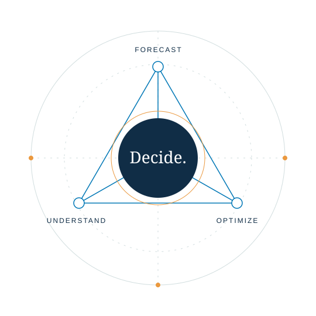

Forecasting with stability.
How can demand forecasts stay accurate while becoming more consistent inputs to replenishment and resource planning?
Demand forecasting · Machine learning
From complex data
to thoughtful decisions.
I work at the intersection of supply-chain analytics, operations research, and applied AI—connecting models with the decisions people make in practice.

I’m a data science consultant at Accenture and an independent researcher. My professional work focuses on forward and reverse logistics: understanding demand, balancing inventory, identifying bottlenecks, and supporting asset-recovery decisions.
I hold a master’s degree in Business Analytics from MIT and a bachelor’s degree in Industrial Engineering from Purdue University. That combination of engineering and analytics shapes how I approach problems—with attention to uncertainty, constraints, and how an analysis will be used.
My research explores demand-forecast stability, causal decision support, and AI-assisted reverse logistics. Alongside this work, I’m involved in Verto Mind, an AI-powered cognitive-reframing app.
Explore my experienceHow can demand forecasts stay accurate while becoming more consistent inputs to replenishment and resource planning?
Demand forecasting · Machine learning
How should causal evidence, incomplete information, and operational constraints shape which action comes next?
Causal decision support · Optimization
How can unstructured return notes inform targeted inspection and resource recovery when labor is scarce?
Semantic signals · Reverse logistics
Accepted · AIBThings 2026
Accepted for presentation · ICECCME 2026
Accepted for presentation · ICEME 2026
Public preprints are linked alongside their reported conference status. Explore the research page for all five works and citation details.
A little space.
A different perspective.
An AI-powered cognitive-reframing app that guides users from a stressful thought toward a more balanced perspective, with a personalized Verto Card at the end of the journey.
Available in TestFlight betaBegin with a specific worry or stressful thought.
Move through a structured, AI-assisted reframing process.
Reveal a personalized Verto Card to revisit.
AI-assisted cognitive reframing · TestFlight beta